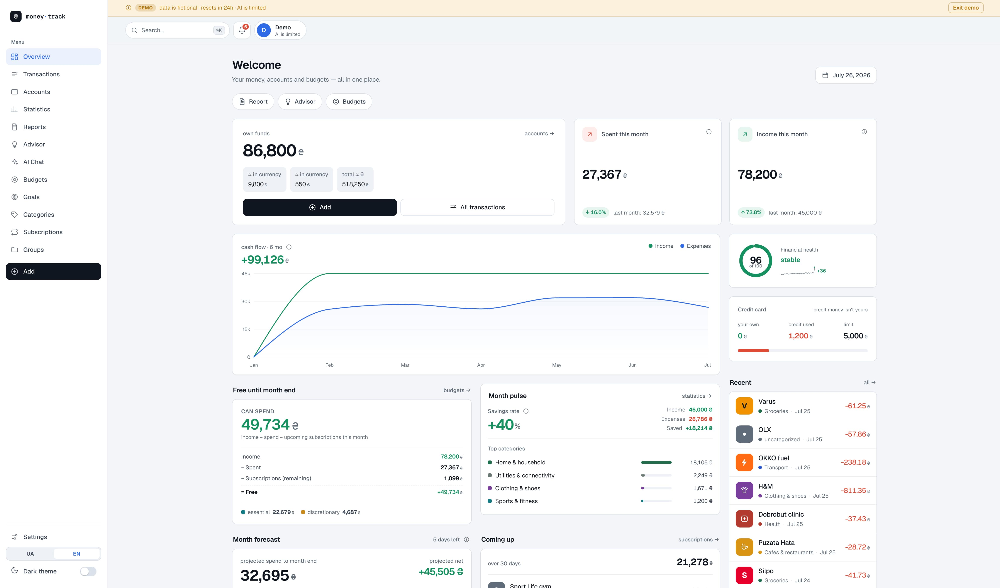

Hi, I'm Vitaliy, or just Italik. I've been building for the web for 3+ years, taking projects from a Figma design all the way to a deployed product, on my own or as part of a team.
Most of my work is on the front-end with React, Next.js and Astro in TypeScript, where I care about clean, responsive, well-performing interfaces. When a project needs more than the front-end, i move into the back-end too: node.js, firebase, rest apis, and a headless cms like strapi
Lately I've been building AI into what I make. I've integrated LLM APIs into real products and made AI-assisted development a daily part of how I work, with my own workflows and a custom skill. My main project right now is Money Track, an AI finance app with a deterministic core that keeps the model honest about every number.
What I enjoy most is owning a feature from an idea to something that actually ships, and going deeper into more complex, product-focused apps.
An AI-powered personal finance tracker. Bank sync, deterministic categorization, and an LLM advisor grounded in one canonical data layer, so the AI never invents the numbers. Built AI-augmented, with per-user data isolation. Live demo, open source.

A serverless Telegram bot that brings an LLM into group chats. It stores and compacts chat history, builds per-user memory, and answers questions in context.